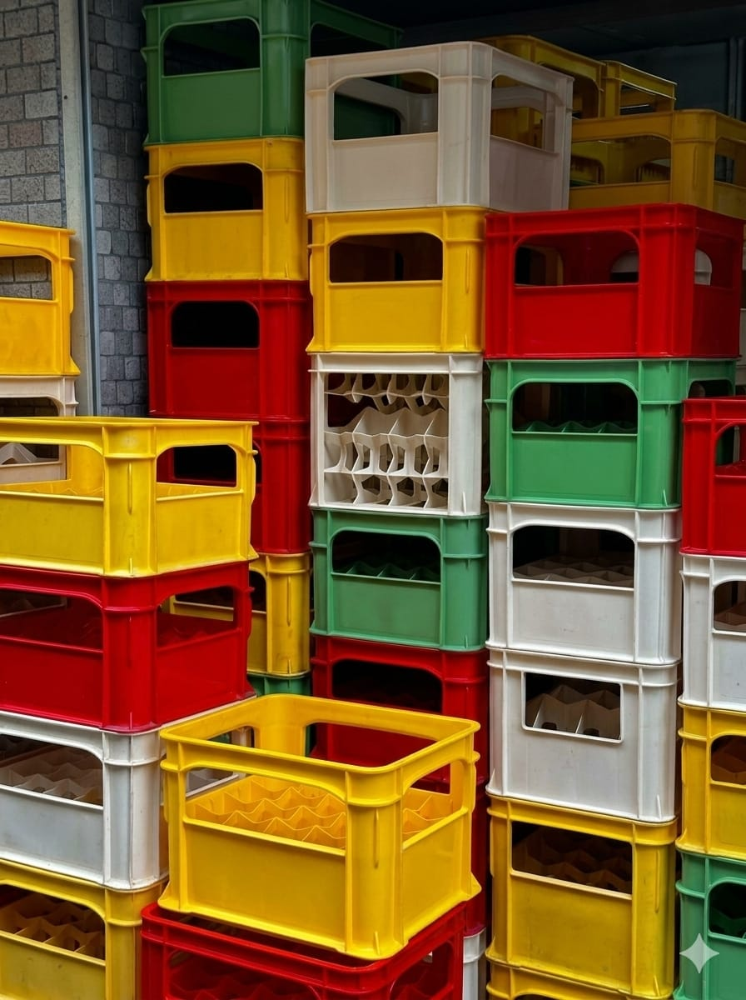
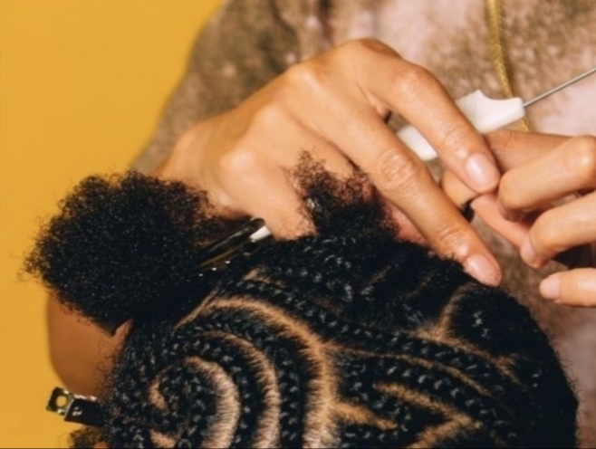
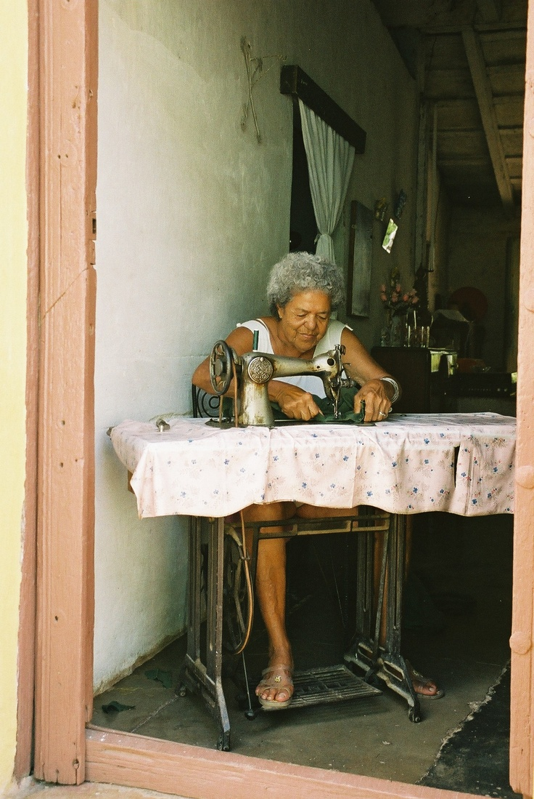
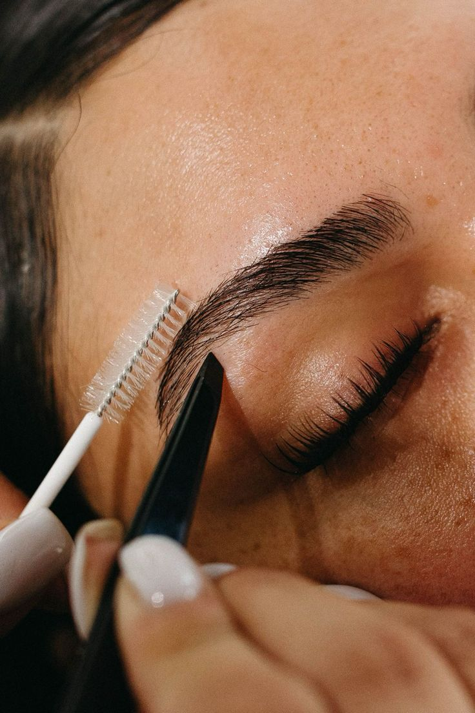
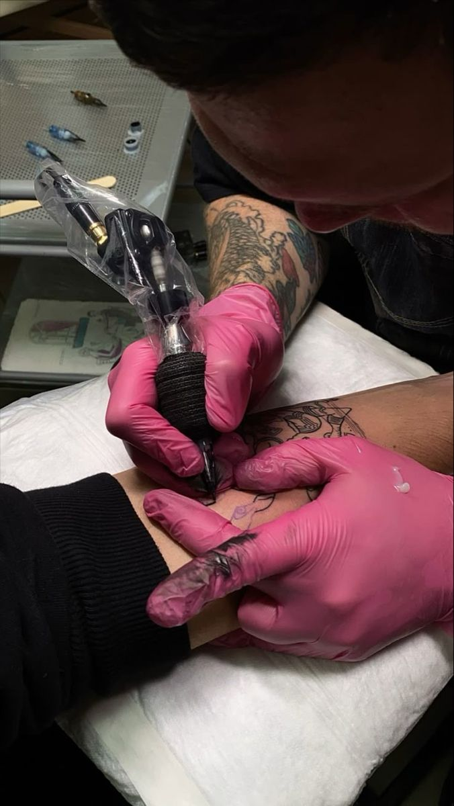
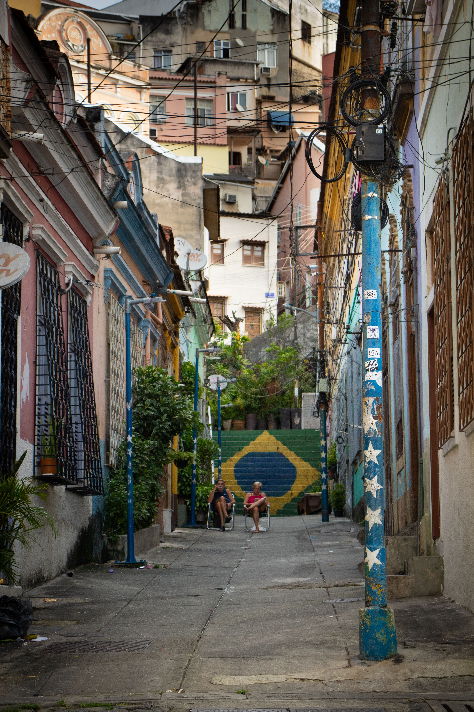

Aqui o seu comércio voa
Sonhe alto e faça seu comércio local crescer rapidamente na Feira de Quebrada. A melhor plataforma de comércio do Brasil.
Descubra quem faz acontecer
na sua quebrada.
Conheça algumas das profissões mais registradas e procuradas na Feira de Quebrada.
-

-

-

-

Categorias Populares
Navegue pelos estabelecimentos mais buscados da nossa plataforma.

Sobre Nós
A Feira de Quebrada nasceu para valorizar quem faz a nossa comunidade acontecer. Criamos este espaço para dar visibilidade a pequenos empreendedores e aproximar pessoas dos produtos e serviços produzidos dentro de suas próprias comunidades.
Acreditamos na força da cultura local, da criatividade e do empreendedorismo brasileiro. Apoiar um negócio local é também valorizar histórias, talentos e sonhos.
Porque fortalecer o pequeno empreendedor é fortalecer a quebrada. Aqui, a gente valoriza quem faz.
Mapa Interativo
A integração com o mapa de estabelecimentos ficará aqui. Os usuários poderão arrastar, dar zoom e ver os estabelecimentos com seus respectivos pins e rotas.
Explorar mapa